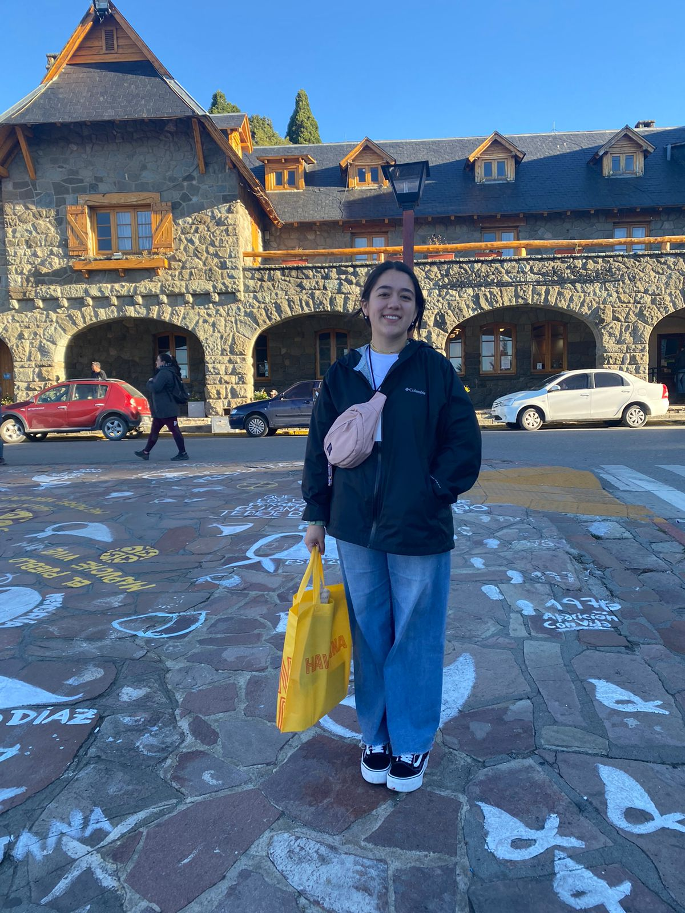

Patricia Harris / WDD 130
"Hello, my name is Patricia. I have six siblings and I am from northern Chile. I enjoy mango, learning new things, and exploring the world of web development. In my free time, I like to read, listen to music, and spend time with my family. I am excited to improve my skills and create fun projects. This course is the first step in my journey to becoming a better web developer."